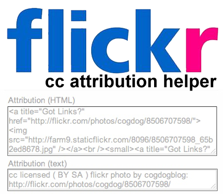

flickr cc attribution helper
Turns the laborious task of giving attribution of creative commons flickr photos into a one click operation.

Why
It's a bag of gold-- collection of creative commons licensed photos on flickr. Yet, to use said images to create a blog post requires no less than 12 clicks and 4 copy/paste operations. In 2009 I thought there should be an easier way, and created the first flickr cc attribution helper as a Firefox Greasemonkey script. The script detected if a given flickr photo was Create Commons licensed. If so, it inserted directly into the flickr page a cut and paste set of HTML that had everything to put into a blog post- the image code to display the photo, a link back to the original, and a display of the license, the photo owner, and links back. It also provided a second text attribution string that could be used in documents or presentations.
Since then I modified this script to work as a Chrome extension. I've used this on literally hundreds of blog posts primarily on CogDogBlog.
The pitfall of this approach was that it was completely dependent on knowing the structure of the flickr photo page, which has changed 3 times since 2009/ Each change requiring a re-write of the script. Flickr does not provide any standard meta data on the page to identify the creative commons license, so getting details called for a set of XPATH parsing and Javascript gymnastics.
The update of the flickr site in March 2014 again rendered the script unfunctional; and made it imposible to update because much of the information was not generated dynamically via complex scripts; the information could not be easily parsed.
The Way Forward
This new version takes a different approach; a person interested in using the tool intalls a web browser bookmarklet. Upon viewing a flickr photo, the bookmarklet spawns a window containing the one click copy attribution.

It's almost as good as before, and is not limited to browser brands.
The work of the attribution helper is done via an HTML page boosted with some jQuery code. The bookmarklet passes the unique flickr id (it's in the URL), and the special page uses the flickr api vis JSON to get all of the information needed to build and display an attribution string.
The Easy Way vs the Custom Way
If you want to do basic attribution, you can use the bookmarklet generating tool below, and go off attributiing., It is powered bby the helper tool page residing in this github site.
If you would like to customize the attribution output in any way, or just prefer to run your own, you can grab a copy of the attribtion helper on github, fork and modify, and run on your own web server. It just needs to be available at a public web page. And you can still use the nookmarklet generator below to build your browser tool.
Bookmarklet Generator
Here is the place! Get your own tool here.